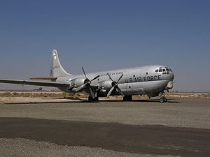
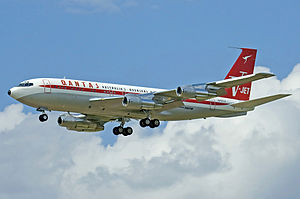
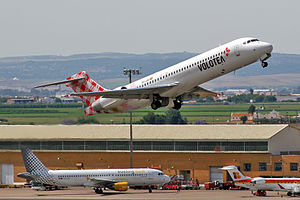

Boeing 377

Boeing 377 Stratocruiser-чотиримоторний
далекомагістральний пасажирський літак.Коли фірма Боїнг розробила під час
Другої світової війни свій знаменитий B-29 Superfortress («Суперфортеця»), стало очевидно,
що це не просто дуже вдалий бомбардувальник, але й літак, здатний дати народження новому
напрямку в авіабудуванні. Незабаром після запуску в дію B-29 ВПС США та компанія «Боїнг»
прийшли до домовленості про початок робіт над новим транспортним літаком, і незабаром в небо
піднявся C-97 Stratofreighter. У цьому літаку були застосовані крила, двигуни та хвостове
оперення від B-29, але фюзеляж був практично повністю перероблений. Літак вражав усіх своїми
неймовірними розмірами. Незважаючи на тупий ніс, розрахункова швидкість у
цієї машини була такою ж, як у B-29. Хоча Stratofreighter був зроблений в строгій
відповідності зі специфікацією військового відомства і був військовим транспортником,
в Боїнгу розуміли, що війна наближається до кінця, і стали шукати нові застосування
для цієї машини.
Авіакомпанія Pan American World Airways виявила зацікавленість у цьому літаку, але зажадала
переробити його, встановивши нові двигуни. Отримавши запевнення, що авіакомпанія купить нові
машини, Boeing переробила літак відповідно до вимог замовника, встановивши, крім нових
двигунів, систему антизледеніння; застосувала в конструкції нові легкі сплави та переробила
хвостове оперення. Внутрішній простір було перетворено в двопалубний салон з люксовими меблями
та спіральними сходами, що ведуть в бар, розташований на нижній палубі. Боїнг 377 Стратокруізер
здійснив свій перший політ 8 липня 1947 р.
Технічні характеристики
| Місткість: до 100 пасажирів |
Двигуни: 4 поршневих 28-циліндрових радіальних двигуна |
Максимальна злітна вага: 67133 кг |
Порожня вага: 37876 кг |
Максимальна дальність польоту: 6760 км |
Крейсерська швидкість: 547 км/год |
Практична стеля: 9800 м |
Розмах крил: 43,05 м |
Максимальна довжина: 33,63 м |
Максимальна висота: 11,66 м |
Boeing 707

Boeing 707 — реактивний
пасажирський лайнер, спроектований на початку 1950-х років.
Один з перших реактивних пасажирських літаків у світі, поряд з
британським DH-106 Comet, радянським Ту-104 і французьким Sud Aviacion Caravelle.
Перший політ дослідного серійного 707-120 відбувся 20 грудня 1957. Всього з 1958 по
1991 роки було вироблено 1010 «Боїнгів-707». Комерційна експлуатація 707-120 почалася з авіакомпанії Pan American World Airways 26 жовтня 1958. Перший військово-транспортний літак/літак-заправник KC-135, створений на базі 367-80 та деяких елементів конструкції 707 злетів 31 серпня 1956 року, а поставки для Стратегічного авіаційного командування (SAC) ВПС США на авіабазу Касл в Каліфорнії почалися в червні 1957 року. На базі Boeing 707 та KC-135 були створені їх різноманітні цивільні та військові модифікації: заправники, розвідувальні літаки, розвідники радіоелектронних засобів противника, погоди, літаки для наукових досліджень, літаки дального радіолокаційного стеження, повітряні командні пункти керування та зв'язку зі стратегічними ядерними силами — МБР, підводними човнами з БРПЧ, бомбардувальниками на випадок знищення наземних командних пунктів в ядерній війні, перевезення вищого керівництва (США та інших країн).
Станом на сьогодні вантажні «Боїнги-707», його різні військові модифікації, а також
літак KC-135 продовжують літати та перебуватимуть на службі ймовірно до 2040 року.
Переважно вони використовуються в системі радіоелектронної розвідки AWACS.
Технічні характеристики
|
707-120B |
707-320B |
| Екіпаж |
3 (4 з навігатором під час надводних перельотів) |
| Пасажири (2 клас) |
110 |
147 |
| Пасажири (1 клас) |
179 |
202 |
| Максимальна злітна маса |
116 570 кг |
151 320 кг |
| Маса порожнього |
55 580 кг |
66 406 кг |
| Максимальна дальність польоту |
6 820 км |
6 920 км |
| Крейсерська швидкість |
1000 км/год |
920 км/год |
| Довжина |
44,07 м |
46,61 м |
| Розмах крил |
39,9 м |
44,42 м |
| Висота хвоста |
12,93 м |
| Ширина фюзеляжу |
3,76 м |
Boeing 717

Boeing 727 — вузькофюзеляжний середньомагістральний
пасажирський літак, що здійснив перший політ 9 лютого 1963 року. З 60-х по 80-і роки Боїнг 727
був одним з найпопулярніших авіалайнерів у світі. Всього з 1963 по 1984 було вироблено 1832 літака.
Boeing 727 був розроблений на початку 1960-х, щоб задовольнити потреби трьох американських
авіакомпаній: United Airlines, American Airlines та Eastern Air Lines. Завданням було
створення масового реактивного літака, здатного використовувати ЗПС невеликих аеропортів,
виконувати рейс навіть при відмові одного двигуна, бути більш економічним, ніж B-707,
простим в експлуатації та обслуговуванні. Boeing 727 перш за все мав використовуватися як
літак для регіональних авіаперевезень на заході США і на Алясці, а також перельотів між
США і країнами Карибського басейну.
Для спрощення використання літака в малопідготованих аеропортах,
найбільше уваги було приділено механізації крила (зменшення необхідної довжини ЗПС)
і вбудованому трапу (для спрощення посадки та висадки пасажирів у разі відсутності
штатного трапа). Двигуни літака відрізнялися великим рівнем шуму, що створювало
проблеми експлуатантам в перші роки використання лайнера. У пізніх модифікаціях
рівень шуму був зменшений.